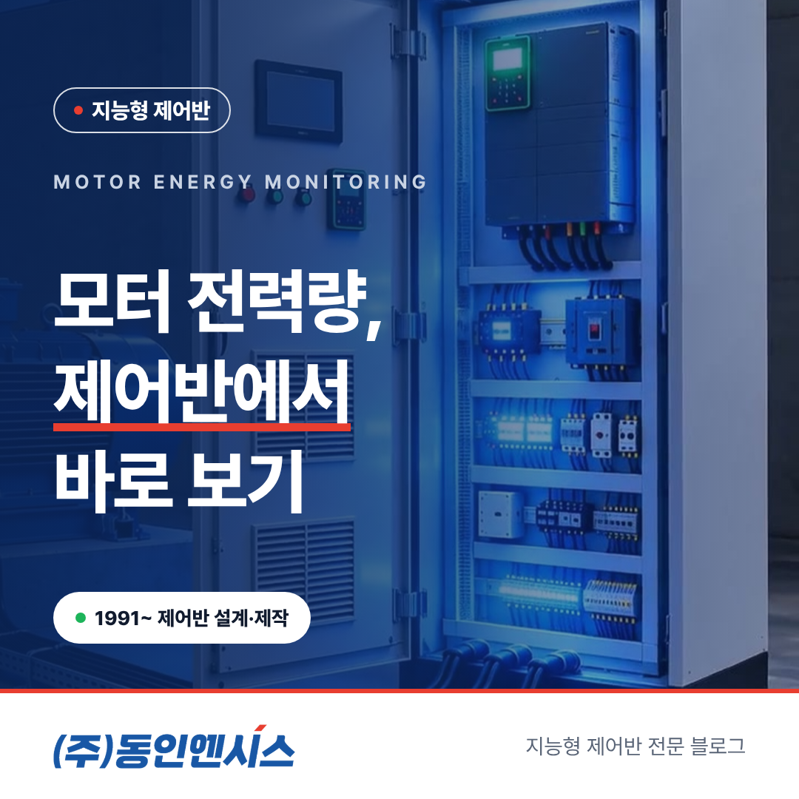
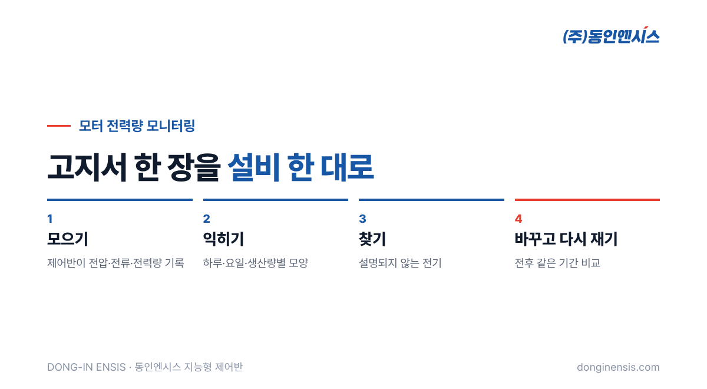
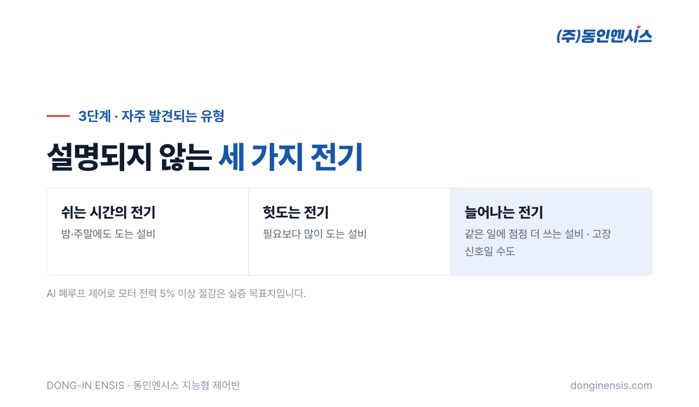

매달 전기요금 고지서를 받으면 공장 전체가 얼마를 썼는지는 압니다. 그런데 그 전기를 어느 설비가 썼는지 물으면 대답이 막힙니다. 공장 전기의 상당 부분은 펌프, 팬, 압축기, 컨베이어를 돌리는 모터가 씁니다. 그러니 모터 한 대 한 대의 사용량이 보이지 않는다는 것은, 가장 큰 지출 항목의 내역서 없이 살림을 꾸리는 것과 비슷합니다. 공장과 배의 제어반을 30년 넘게 설계·제작해 온 부산 기업 동인엔시스가, 따로 계측 장비를 달지 않고 제어반에서 바로 시작하는 모터 전력량 모니터링을 네 단계로 정리했습니다.
공장 전체 전력량은 한전 계량기가 알려 줍니다. 하지만 전체 숫자만으로는 무엇을 바꿔야 할지 알 수 없습니다. 예를 들어 이번 달 요금이 올랐다면 생산이 늘어서인지, 어떤 설비가 비효율적으로 돌아서인지, 누군가 밤새 설비를 켜 두어서인지 구분이 안 됩니다.
설비별 전력량이 보이면 질문이 구체적으로 바뀝니다. "3번 송풍기가 지난달보다 전기를 더 쓰는데 생산량은 같다", "주말에도 냉각 펌프가 평일과 비슷하게 돈다"처럼 손댈 곳이 하나둘 구체적으로 보이기 시작합니다. 에너지 관리는 바로 이런 질문에서 출발합니다. 막연히 '전기를 아끼자'는 구호보다, 설비 이름이 붙은 숫자 하나가 현장을 훨씬 빨리 움직입니다. 담당자도 어느 설비를 먼저 들여다봐야 할지 분명해지고, 경영진에게 개선 계획을 설명할 때도 근거가 생깁니다.

모터를 제어하는 제어반에는 이미 모터로 가는 전기가 지나갑니다. 동인엔시스 지능형 제어반은 모터를 제어하면서 전압과 전류, 전력량을 함께 기록합니다. 설비마다 전력계를 따로 달고 배선을 새로 할 필요가 없고, 설비는 그대로 둔 채 제어반만 교체하거나 새로 설치하면 됩니다.
전기 값과 함께 운전 상태, 회전속도, 모터 온도, 진동도 같은 시각으로 남는다는 점이 중요합니다. 전력량이 늘었을 때 그 이유가 운전 시간이 길어져서인지, 같은 시간을 돌면서 힘이 더 들어서인지를 함께 따져 볼 수 있기 때문입니다. 따로 단 전력계는 '얼마나'만 알려 주지만, 제어반에서 함께 모은 값은 '왜'까지 짐작하게 해 줍니다.
기록을 시작하고 몇 주가 지나면 설비마다 전력 사용의 '모양'이 또렷하게 보이기 시작합니다. 처음에는 아래 세 가지를 차례로 살펴보세요.
이 단계의 목표는 절감이 아니라 이해입니다. 평소 모양을 알아야 나중에 무엇이 달라졌는지를 알아챌 수 있습니다. 계절도 함께 보세요. 여름에는 냉각 설비가, 겨울에는 난방이나 보온 설비가 더 많이 돌기 마련이라, 한두 달만 보고 판단하면 계절의 영향을 설비의 문제로 오해하기 쉽습니다. 가능하면 같은 달끼리, 같은 생산 조건끼리 비교하는 습관을 들이는 것이 좋습니다.
평소 모양이 잡히면 이제 설명되지 않는 부분을 찾습니다. 현장에서 자주 발견되는 유형은 이런 것들입니다.
세 번째 유형은 에너지 문제이면서 동시에 고장의 신호이기도 합니다. 전력량을 온도, 진동과 함께 보면 정비가 필요한 설비를 일찍 찾는 데에도 도움이 됩니다. 실제로 전기를 더 먹기 시작한 설비를 따라가 보면 베어링이나 벨트, 필터처럼 손볼 곳이 함께 나오는 경우가 많습니다. 에너지 관리와 설비 관리가 같은 데이터에서 만나는 지점입니다.
Photorealistic photo of two Korean factory staff, one in a work vest and one in a shirt, reviewing a laptop showing abstract bar charts grouped by equipment and a daily usage curve (no readable text), a printed electricity bill shape blurred on the desk without readable text, factory office, natural light, documentary style, no brand logos, no readable text. 3:2 landscape.
손댈 곳을 찾았다면 운전 방식을 바꿔 봅니다. 한꺼번에 여러 가지를 바꾸면 무엇이 효과를 냈는지 알기 어려우니, 한 번에 하나씩 바꾸는 것이 좋습니다. 쉬는 시간의 운전 일정을 조정하거나, 회전속도를 조절할 수 있는 인버터 설비라면 필요한 만큼만 돌도록 설정을 바꾸는 식입니다.
중요한 것은 바꾼 뒤에 다시 재는 일입니다. 바꾸기 전후의 같은 기간을 나란히 놓고 비교하면, 그 조치가 실제로 효과가 있었는지 숫자로 확인할 수 있습니다. 기간별 이력은 화면에서 바로 볼 수 있고, 필요하면 CSV로 내려받아 보고서에 붙일 수 있습니다. 효과가 확인된 방법은 같은 종류의 다른 설비에도 넓혀 적용합니다. 반대로 효과가 기대에 못 미쳤다면 그 이유도 기록으로 남겨 두세요. 생산 조건이 바뀌었는지, 설정이 다시 원래대로 돌아갔는지를 확인하는 과정에서 다음 개선의 실마리가 나오기도 합니다.
지금 설명한 네 단계는 사람이 데이터를 보고 판단해 운전을 바꾸는 방식입니다. 동인엔시스는 여기서 한 걸음 더 나아가, AI가 찾은 최적 운전값을 현장 PLC에 되돌려 보내는 폐루프 제어를 실증하고 있습니다. 이 실증은 산업용 모터 시스템의 전력 소비를 5% 이상 줄이는 것을 목표로 하며, 아직 결과가 아니라 목표치입니다. 어느 방식이든 출발점은 설비별 전력량을 정확히 기록하는 일입니다. 사람이 보고 판단하든 AI가 찾아내든, 비교할 기준이 되는 평소의 기록이 없으면 무엇이 나아졌는지 말할 수 없기 때문입니다.

Photorealistic close-up photo of an open light-grey industrial control cabinet showing a compact power monitoring module and a variable frequency drive with small displays (no readable text), current transformer rings around cables, neat wiring, soft even lighting, generic unbranded devices, no brand logos, no readable text. 3:2 landscape.
Q. 모터 전력량 모니터링을 하려면 전력계를 따로 달아야 하나요? 지능형 제어반으로 교체하거나 새로 설치하면 제어반이 전압·전류·전력량을 함께 기록하므로, 설비마다 별도 전력계를 달 필요가 없습니다.
Q. 전력량을 보면 바로 요금이 줄어드나요? 안타깝지만 보는 것만으로 저절로 줄지는 않습니다. 설명되지 않는 사용을 찾아 운전 방식을 바꾸고, 그 효과를 다시 확인하는 과정을 거쳐야 합니다. 절감 폭은 설비와 운전 조건에 따라 다릅니다.
Q. 어떤 설비부터 보면 좋을까요? 용량이 크고 오래 도는 모터 설비, 특히 펌프·송풍기·압축기처럼 부하가 시간대마다 달라지는 설비부터 보는 것을 권합니다. 한두 대로 시작해 효과를 확인한 뒤 넓혀 가면 부담이 적습니다.
모터 전력량 모니터링은 공장 전체의 숫자를 설비 한 대 한 대의 이야기로 나누는 일입니다. 모으고, 익히고, 찾고, 바꾸고 다시 재는 네 단계를 거치면 전기요금 고지서가 막연한 숫자가 아니라 손댈 수 있는 목록이 됩니다.
☎ 051-862-3668 · ✉ dongin@donginmne.com
아래 질문 중 하나에 실제 경험으로 답해 본문 적당한 곳에 넣어 주세요. 사람이 직접 쓴 문장이 들어가면 네이버에서 저품질 위험이 줄고 노출에 도움이 됩니다.